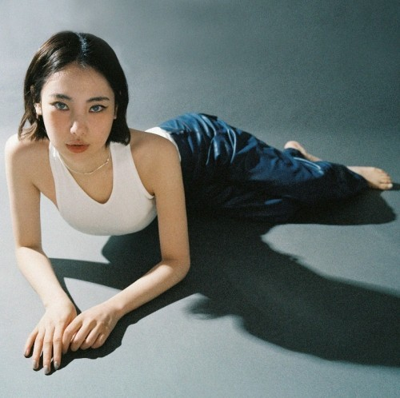
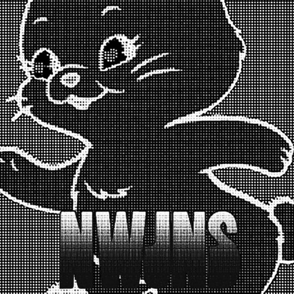

국내 R&B 음유시인들 | 첫 소절 들었을 때 곧장 속으로 빨려 들어가는 듯한 분위기를 좋아합니다 |
|---|
딘 - NASA (feat.FKJ)
전혀 알 수가 없대
더는 이해 할 수 없대 아직도 넌 이상 속에 현실을 보지 못해 넌 빛에 닿으려 해 과거는 어두웠기에 아 맞아 넌 멀리 간 게 미래는 더 어두웠기에 어린 눈에 비친 찬란히 빛나던 빛을 아직 넌 기억해? Come back to Earth Don't think too much You've gone too far away There is nothing else Cuz the light is inside of your heart Whoo Ah ah ah ah - Ah ah ah ah - Come back to Earth (Come back to now) Don't think too much Heart is bumpin' again Soul is buzzin' again I know You know Find the signal again 기다릴게 저 먼 미래에서 (Don't be fallin' again) Just run Run |
||||||
유라 - MIMI
이마에 미끄러진 먼동의 싹이
뜨거워 질만큼 그대가 떠오르네 예쁘게 뜨겁게 하네 헛된 품에서 꿈을 찾는 내가 어린 자국을 더듬어 보는 내가 슬프게 눈물 나게 하네 착한 마음 나쁜 마음 죄가 되지 않을 만큼만 덜어내 나쁜 마음 그 나쁜 마음 너의 못된 숨은 누구의 목을 물게 되니 착한 마음 그 나쁜 마음 저 나무는 고개 숙일 계절을 안 건지 나쁜 마음 그 나쁜 마음 그 예쁜 손 그 예쁜 눈 미미하게 사라져 미미는 왜 날 떠났어 사랑은 왜 없어져 친구야 날 좀 찾아줘 미미하게 사라져 미미는 왜 날 떠났어 우리는 다시 만나서 우리는 다시 우리는 다시 잠과 잠 좀 자야지의 사이 뜨거워 질만큼 그대가 떠오르네 예쁘게 뜨겁게 하네 날이 밝을 때까지 해야지 여린 풀을 뜯고 있던 내가 슬프게 눈물 나게 기억나게 하네 착한 마음 나쁜 마음 죄가 되지 않을 만큼만 덜어내 나쁜 마음 그 나쁜 마음 너의 못된 숨은 누구의 목을 물게 되니 착한 마음 그 나쁜 마음 저 나무는 고개 숙일 계절을 안 건지 나쁜 마음 그 나쁜 마음 그 예쁜 손 그 예쁜 눈 미미하게 사라져 미미는 왜 날 떠났어 사랑은 왜 없어져 친구야 날 좀 찾아줘 미미하게 사라져 미미는 왜 날 떠났어 우리는 다시 만나서 우리는 다시 우리는 다시 |
 | |||||
|  |
뉴진스 - Ditto
Woo woo woo woo ooh
Woo woo woo woo Stay in the middle Like you a little Don't want no riddle 말해줘 say it back Oh say it ditto 아침은 너무 멀어 So say it ditto 훌쩍 커버렸어 함께한 기억처럼 널 보는 내 마음은 어느새 여름 지나 가을 기다렸지 all this time Do you want somebody Like I want somebody 날 보고 웃었지만 Do you think about me now yeah All the time yeah All the time I got no time to lose 내 길었던 하루 난 보고 싶어 Ra-ta-ta-ta 울린 심장 (Ra-ta-ta-ta) I got nothing to lose 널 좋아한다고 wooah wooah wooah Ra-ta-ta-ta 울린 심장 (Ra-ta-ta-ta) But I don't want to Stay in the middle Like you a little Don't want no riddle 말해줘 say it back Oh say it ditto 아침은 너무 멀어 So say it ditto I don't want to Walk in this 미로 다 아는 건 아니어도 바라던 대로 말해줘 Say it back Oh say it ditto I want you so, want you So say it ditto Not just anybody 너를 상상했지 항상 닿아있던 처음 느낌 그대로 난 기다렸지 all this time I got nothing to lose 널 좋아한다고 wooah wooah wooah Ra-ta-ta-ta 울린 심장 (Ra-ta-ta-ta) But I don't want to Stay in the middle Like you a little Don't want no riddle 말해줘 say it back Oh say it ditto 아침은 너무 멀어 So say it ditto I don't want to Walk in this 미로 다 아는 건 아니어도 바라던 대로 말해줘 Say it back Oh say it ditto I want you so, want you So say it ditto Woo woo woo woo ooh Woo woo woo woo |
아카이빙 코멘트
딘 - NASA
아름다운 우주 속의 화자의 공허함이 느껴져, 저의 공허함도 괜히 아름답게 느낄 수 있습니다.
유라 - MIMI
개인적으로 정말 좋아하는 음유시인입니다. 감각을 오목조목 뜯어 해체시키는 듯한 유라의 해석이 좋습니다.
뉴진스 - Ditto
전주에서 차가운 겨울 냄새나는 노래입니다. 250 선생님 민희진 선생님 그리고 뉴진스 합 최고.